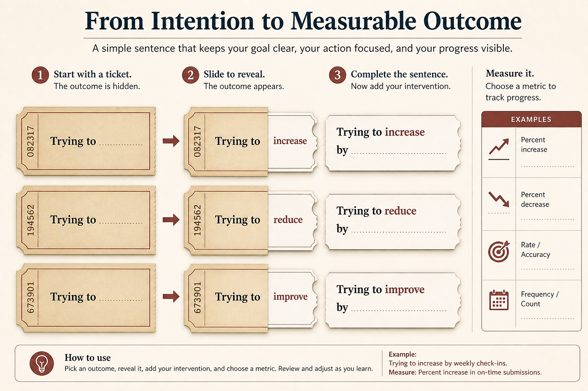

Smuggle outcome language in; don’t wait for permission
Source: John Cutler (@johncutlefish)
original post
What it claims
Use missions/bets/outcomes alongside features (Trojan horse). Monthly outcome reviews including failures. Sentence: “Trying to [outcome] by [intervention].” One proof outcome bet. Belief/bet map. Measurement column. Stay problem-focused (“candidate ideas”). Basics (quality, flow, flags) first or nobody can be outcome-focused.
Why it matters for a PO
Change language in place. Reliability is a prerequisite for outcome work.
3 takeaways
- Add outcome language beside features.
- Outcome first; features are the intervention.
- One bet beats a manifesto.
Practice this week
Rewrite touched items as Trying to [outcome] by [intervention]; add Measurement; 30-min review including a miss.
Also from
- John Cutler (@johncutlefish), original post (merged from lesson 119): The word list: say mission instead of project; attach “bet” even to prescriptive work; use opportunity vs intervention instead of problem vs solution; deliver capabilities, not features. Rename the board’s Done column to Adoption or Measuring, and phrase work as “we’re trying X to see if it impacts Y, which we believe impacts Z.”